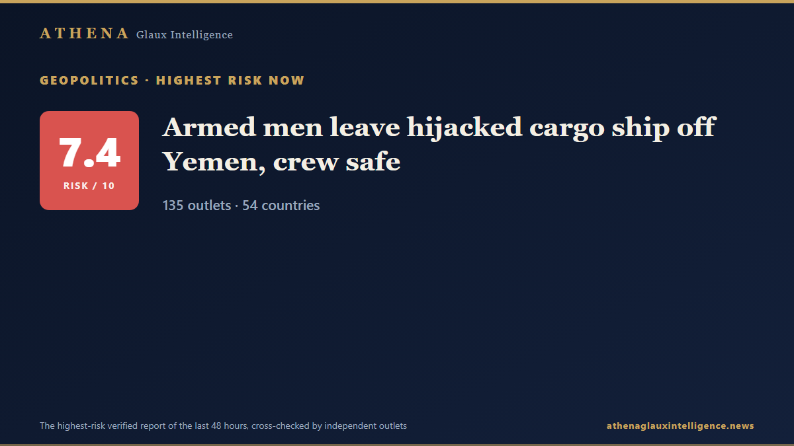
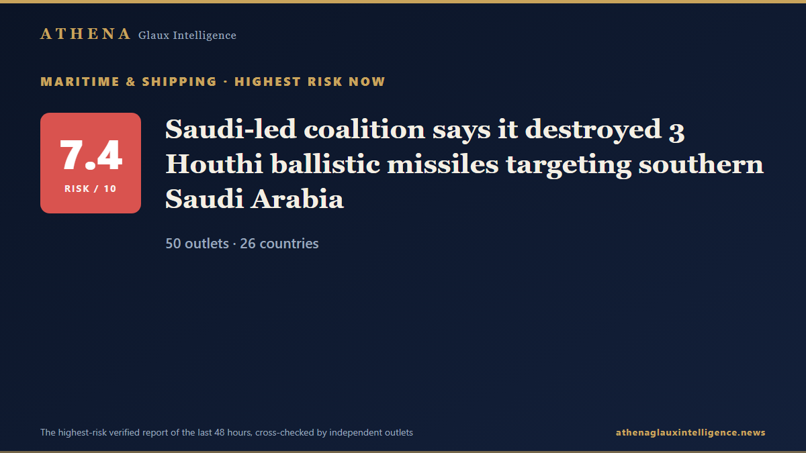

Risk 7.4Elevated
Geopolitics, the economy and maritime shipping — cross-checked across countries.
Geopolitics
All geopolitics >Highest risk now

Rising riskRisk up in the last 24 hours
Maritime & shipping
Maritime desk >Highest risk now
Risk 7.4Elevated
Saudi-led coalition says it destroyed 3 Houthi ballistic missiles targeting southern Saudi Arabia
Read the evidence ›
Watch listChokepoints, ports and other shipping reports
- Strait of HormuzDisruptedattack / strike · risk 6.6 · 140 newsrooms (72 h)
- Bab el-Mandeb / Red SeaDisruptedattack / strike · risk 7.4 · 138 newsrooms (72 h)
- Kerch Strait / Black SeaDisruptedattack / strike · risk 7.4 · 138 newsrooms (72 h)
Every headline, checked across countries.
ATHENA Glaux reads 742 news outlets worldwide. A story becomes a verified event only when independent outlets report it. Each event shows who was first and a risk score with its reasons.
1,142events in 24 hours
742outlets followed
43minutes between updates
Earthquake or flood near you this week?
Type your town and see the earthquakes, floods, storms and official warnings near it, with a 72-hour emergency kit checklist. Free, no sign-up, and your place stays on your device.
Reports drift in from independent outlets - when two meet on the same story, it becomes a verified event.
How ATHENA checks a story
- CollectReports arrive from independent outlets in many countries.
- MatchWhen two outlets meet on the same story, it becomes a verified event.
- ExplainEach event shows who was first, how far it spread and why the risk is what it is.
Global risk outlook
Weekly and monthly reviews: the highest-risk events, the trends by domain and region, and what to watch next.
Read the outlook ›Daily briefing
The ten most important world events of the day, the rising risks and the new events, with every number explained.
Open today's briefing › Geopolitics
GeopoliticsIsraeli Strike Kills 2 Workers at Gaza Clinic, Doctors Without Borders Says
The aid group condemned the attack on a medical facility, which Israel said was a targeted strike that killed security guards it called Hamas operatives. from The New York Times (World)
7.1Importance
6.0Risk · high
91%Confidence
Technology & Cyber
Taiwan awaits local election results as China watches
Taipei Mayor Chiang Wan-an is leading in the vote count in an election against his opponent Puma Shen, Taiwan media outlets reported on Saturday. from France 24 English
Energy & Environment
100th Macy's Thanksgiving Day Parade steps off in Manhattan after postponement
The Buzz Lightyear balloon. The Macy’s centennial Thanksgiving Day Parade was ready to go on Saturday after a two-day delay. from Gothamist (New York City)
Sponsored
Cybernetics and Artificial Intelligence Lab Welcome to the Cybernetics and Artificial Intelligence Laboratory, established at the Department of Business Administration of the National and Kapodistrian University of Athens. The lab is headed by Professor Dimitrios Thomakos. The lab aims to do research that can be published in top venues. Our research uses tools and methods of Artificial Intelligence, and lies in the following areas: - Forecasting - Decision making - Cyber security - Finance We are always looking forward to collaborating with exceptional students!
Learn more – Cybernetics and Artificial Intelligence LabShips at the world's chokepoints now
Live AIS counts. Tap or hover a bar for the detail.
Latest reports
Iran says it shot down 'enemy reconnaissance drone' over Strait of Hormuz
Netanyahu offers Eisenkot first turn in proposed unity government
Erdogan tells Greek president Türkiye has no hesitation to make Aegean 'sea of peace'
UK pensions department says it was targeted in cyberattack
'Millions starving' in Yemen's north, NGO head says
Magnitude 6.2 earthquake strikes Russia’s Kamchatka Peninsula
Albania’s Independence Day rocked by violent protests over corruption
BJP pushing India towards dictatorship, 850 figure will murder democracy, says Rahul Gandhi
Geopolitics
Russian authorities say over 1,200 Ukrainian drones shot down in new nighttime attack
Ukraine also reported hundreds of Russian drones fired at several regions, with one person killed and five injured. from TheJournal.ie
Geopolitics
CHINA DIARIES: Where Students Build the Future
I must confess, I was not quite prepared for what I saw during my visit to the Qinling Workshop at Xi’an Aeronautical Vocational and Technical College in China. from Daily Trust
Economy & Markets
Trump shares Thanksgiving post claiming GDP figures released before midterm elections were 'fake'
The Commerce Department revised third-quarter GDP growth to 4.3% from 3.4% on Wednesday in what Trump calls a "massive, and purposeful, error." from The Jerusalem Post
Geopolitics, Politics & Security
More ›Diplomacy & summits
Netanyahu offers to rotate Israeli premiership with Eisenkot
Eisenkot is expected to form a coalition with anti-Netanyahu parties, but his Yashar party has also been conducting negotiations with Netanyahu's Likud. from The New Arab
- Diplomacy & summits
Iran’s supreme leader adviser warns Iraq not to become ‘tool of Trump’
- Elections & politics
Netanyahu offers to step down as Israel’s PM – but there’s a catch
- Wars & conflicts
Russian forces attack two apartment buildings in Kharkiv with drones, one injured
- Wars & conflicts
Drones Strike Russia’s Novoshakhtinsk Refinery and Samara Oil Hub
Economics, Finance & Markets
More ›Banking & credit
Iran rial falls to near 3 million to US dollar as sanctions, blockade weigh
Iran’s currency has plummeted to a record low, approaching 3 million rials to the US dollar, due to US sanctions and embargo pressures. from Arab News
- Banking & credit
US regulators shut United Fidelity Bank in biggest bank failure since 2024
- Forecasts & recession risk
Rain, thunderstorms and strong winds for 48 hours: The “Red Alert” areas and when heavy rainfall is expected in Attica
- Banking & credit
21 Settler Attacks on Palestinians in West Bank in 24 Hours
- Inflation & interest rates
US Black Friday spending set to rise despite inflation fears
Trade, Industry & Infrastructure
More ›Agriculture & food security
Ukraine commemorates victims of Holodomor famines
On Saturday, November 28, Ukraine commemorates the victims of the Holodomor famines. from Ukrinform (English)
- Agriculture & food security
Russia Strikes Two Greek-Managed Grain Ships Carrying Over 100,000 Tonnes Near Odesa
- Shipping & ports
Cargo vessel involved in incident with military forces in Gulf of Oman
- Critical infrastructure
Russian strike hits critical infrastructure in Kyiv, threatening power and water disruptions
- Tariffs & export controls
UK policewomen told to dress modestly around Muslims, prompting Nigel Farage's two-tier policing attack
Energy, Resources & Environment
More ›Extreme weather & natural disasters
Earthquake, multiple aftershocks rattle Los Angeles
There are no immediate reports of injuries or major damage, although some residents reported broken glass and objects knocked off shelves. from Free Malaysia Today
- Extreme weather & natural disasters
Australia’s conservatives win landslide victory in bellwether state
- Pollution & biodiversity
US Army detonation of 4,500 kg. lead-azide in Iowa had near-zero environmental impact, EPA claims
- Extreme weather & natural disasters
El Nino-linked deluges flood cities in Peru, Ecuador
- Climate & climate policy
COP31 exposed the cracks in climate negotiation, not in cooperation
Technology, AI & Cybersecurity
More ›Space & satellites
Musk Says Google Is Interested in Renting More Computing Capacity from SpaceX
SpaceX's Google cloud deal will bring in $920 million monthly from October 2026 to June 2029. from Express Tribune
- Software & cloud
Google halts construction of Belgian data centre on authorities' order
- Cybersecurity
Latest on DWP State Pensions and benefits online services after ‘cyber incident’
- Cybersecurity
US says systems secure after reports of Air Force hack
- Robotics & automation
The Best Black Friday Sonos Deals (2026): Up to 34% Off
Business, Companies & Investment
More ›Corporate strategy
New growth drivers fuel China's industrial profit gains
China industrial profits, October Year-to-date: 16.0% y/y prior (jany - September) 15.5% October alone: 20.1% y/y prior 14.4% Profit growth at China's industrial firms accelerated sharply in October… from investingLive (ForexLive)
- Corporate strategy
WhatsApp announces new e-SIM feature for international travel
- Sectors & company risks
The 29 Very Best Amazon Black Friday Deals (2026): Up to 60% Off
- Sectors & company risks
Maternal, newborn death prevention research receives 1pc of global share
- Sectors & company risks
29 Best Black Friday Deals Under $100 (2026)
Accidents & emergencies
More ›Accidents & emergencies
8 Killed, Pilot Survives In Peru Military Helicopter Crash
The helicopter crashed while on a mission to rescue a patrol in a remote area of the valley formed by the Apurimac, Ene and Mantaro rivers, known by its Spanish acronym VRAEM. from NDTV World
- Accidents & emergencies
Some bootleg alcohol in Iran is poisoned on purpose, top psychiatrist warns
- Accidents & emergencies
'Hero' gran dies saving two-year-old grandson's life in 'extraordinary act of bravery'
- Accidents & emergencies
Karachi building collapse: Death toll rises to 11 as two more bodies recovered
- Accidents & emergencies
Rescue operation completed in Nizhyn after Russian attack: death toll rises to seven – video
Three ways to read today
Start with the one that fits your timeVerified events
Ranked by how widely they are reported
- Nvidia’s chip financing can’t sustain the AI boom alone, LBS professor says151 outlets · 51 countriesRisk 3.5
- Saudi-led coalition forces carried out 86 air strikes in 24 hours, Houthis say139 outlets · 49 countriesRisk 6.6
- Zelensky objects to Trump calling Putin "friend"75 outlets · 35 countriesRisk 4.4
- At least 9 civilians killed in Ukraine as Russia claims near-record drone interceptions59 outlets · 32 countriesRisk 6.9
- Oil-rich Saudi Arabia bets on futuristic luxury cars to build an EV industry75 outlets · 31 countriesRisk 4.5
Assessment Desk
Ask a question and read a reasoned assessment of a leading story, with what would prove it wrong.
Open the Assessment Desk ›Today in numbers
| 23:00 | 476 |
|---|---|
| 00:00 | 312 |
| 01:00 | 455 |
| 02:00 | 253 |
| 03:00 | 347 |
| 04:00 | 243 |
| 05:00 | 202 |
| 06:00 | 264 |
| 07:00 | 264 |
| 08:00 | 401 |
| 09:00 | 209 |
| 10:00 | 335 |
| 11:00 | 370 |
| 12:00 | 424 |
| 13:00 | 778 |
| 14:00 | 630 |
| 15:00 | 444 |
| 16:00 | 609 |
| 17:00 | 466 |
| 18:00 | 446 |
| 19:00 | 490 |
| 20:00 | 114 |
| 21:00 | 248 |
| 22:00 | 312 |
Risk of today's events
Geopolitics84Energy & Environment28Trade & Industry23Economy & Markets17Technology & Cyber14Business13Maritime4
Emerging signals
- Sudden surge · Active nowSDP
- Rising risk · Active nowIsraeli army expels Palestinians from their lands, detains around 60 in occupied West Bank
- Rising risk · Active nowIran rial falls to near 3 million to US dollar as sanctions, blockade weigh
- Sudden surge · Active nowDoctors Without Borders
- New name in the news · Active nowKunar
Official warnings
- Orange flood alert in BoliviaOrange · GDACS ·
- M 6.5 - Vanuatu regionM6.5 · USGS ·
Stay informed
ATHENA Weekly Risk Picture
The week's biggest geopolitical, economic and shipping risks, cross-checked and scored.
Every Friday at 08:00 Athens time · free · in English
Subscribe freeATHENA on Telegram
News the moment it is published: breaking events at risk 6 or more, an hourly round-up, risk-tracker updates and the daily briefing at 10:00.
Free · posts in English · leave at any time
Join the channelSign-up is handled by beehiiv with double opt-in: nothing you type is sent to ATHENA, and every issue has an unsubscribe link.
Risk trackers
More ›Strait of HormuzRisk 5.312 new this week · about the same as the week beforeRed Sea shippingRisk 7.417 new this week · down from 39 the week beforeGreece–Turkey relationsRisk 5.29 new this week · up from 6 the week beforeCyprusRisk 5.212 new this week · down from 20 the week beforeSanctions on RussiaRisk 3.812 new this week · down from 18 the week beforeRussia–Ukraine warRisk 7.1225 new this week · about the same as the week beforeIsrael, Gaza & the West BankRisk 7.080 new this week · about the same as the week beforeTaiwan StraitRisk 4.612 new this week · about the same as the week beforeOil & gas pricesRisk 2.035 new this week · about the same as the week beforeSuez CanalRisk 0.01 new this week · down from 3 the week beforeTurkish StraitsRisk 0.00 new this weekPanama CanalRisk 0.01 new this week · up from 0 the week beforeShadow fleetRisk 0.00 new this week · down from 4 the week beforeBlack Sea shippingRisk 2.61 new this week · down from 4 the week beforeCentral banks & interest ratesRisk 5.452 new this week · about the same as the week beforeGreek economyRisk 1.38 new this week · about the same as the week beforeEastern Mediterranean energyRisk 0.03 new this week · about the same as the week beforeBalkansRisk 5.520 new this week · about the same as the week beforeMediterranean migrationRisk 3.55 new this week · up from 3 the week before
Global risk outlook — week 48, 2026 (23–29 Nov) ›
Around the world
Southeast AsiaTrump says trade deal reached between the U.S. and the Philippines
59 events
Middle East & North AfricaOil-rich Saudi Arabia bets on futuristic luxury cars to build an EV industry
59 events
North America100th Macy's Thanksgiving Day Parade steps off in Manhattan after postponement
56 events
South AsiaSaudi Arabia, Pakistan, Türkiye open Makkah defense pact talks in Islamabad
53 events
Sub-Saharan AfricaMusk pledges two SpaceX shares for every US child
46 events
Russia & EurasiaRussian authorities say over 1,200 Ukrainian drones shot down in new nighttime attack
41 events
Latin America & CaribbeanUN expert Albanese leaves Costa Rica after being denied entry, stuck at airport for 2 days
28 events